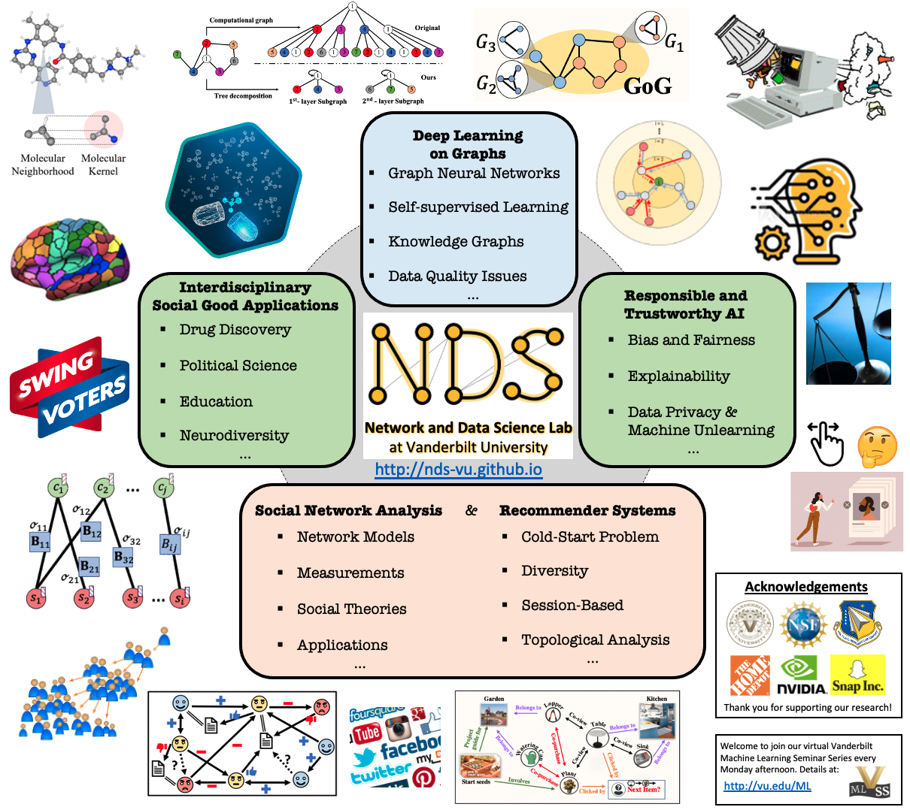

Tyler Derr
 |
Assistant Professor Network and Data Science (NDS) Lab Email: Tyler (dot) Derr (at) vanderbilt (dot) edu |
Bio
Dr. Tyler Derr is an Assistant Professor in the Department of Computer Science, Teaching and Affiliate Faculty in the Data Science Institute, and Faculty Fellow in the Frist Center for Autism and Innovation at Vanderbilt University. He received his PhD in Computer Science from Michigan State University in 2020 under the supervision of Dr. Jiliang Tang and was a member of the Data Science and Engineering (DSE) Lab and Teachers in Social Media (TISM) Project. He had complete his MS in Computer Science at The Pennsylvania State University in 2015 and dual BS in Computer Science and Mathematical Sciences at The Pennsylvania State University in 2013.
Tyler directs the Network and Data Science (NDS) lab, which conducts research in the areas of data mining and machine learning, with emphasis on social network analysis, deep learning on graphs, and data science for social good with applications in drug discovery, education, political science, and autism research. He has mentored his PhD students to have received numerous honors and awards including Vanderbilt's C. F. Chen Best Paper Award in 2022 and Runner-Up Award in 2023, the sole recipient of Vanderbilt's Graduate Leadership Anchor Award for Research in 2023, Finalist in Vanderbilt's Three Minute Thesis (3MT) Competition in 2023, Nvidia Academic Hardware Grant in 2022, Best Paper Award in the New Frontiers in Graph Learning (GLFrontiers) Workshop at NeurIPS’23, along with their works being selected among the top-10 Most Influential CIKM’22/WWW’23 Papers by Paper Digest. He is actively involved in top conferences in his field, both in terms of publishing and serving as an SPC/PC member, while receiving recognition such as the Best Student Poster Award at SDM’19 and Best Reviewer Awards at ICWSM’19 and ’21, as well as WSDM’22. He has contributed to the organization of numerous international conferences and workshops, including serving on the organizing committee of KDD (2021-2024), DSAA (2024), and WSDM (2022, 2024), along with co-founding the Machine Learning on Graphs (MLoG) Workshop at WSDM (2022-2024) along with at ICDM (2022-2023). Being passionate about sharing knowledge, he has delivered tutorials on Graph Neural Networks at KDD’20, AAAI’21, and SDM’24, along with given numerous invited talks, such as at the ACM Web Conference Knowledge Graph Day, Oak Ridge National Laboratory (ORNL) Core Universities AI Workshop held at Georgia Institute of Technology, the recently established Foundation Model Research Center at Tsinghua University, Max Planck Institute for Mathematics in the Sciences (MPI MiS), etc. He serves as Associate Editor for Tsinghua Science and Technology, IEEE Transactions on Big Data, Elsevier Big Data Research, and Frontiers in Big Data. Tyler has received numerous prestigious awards, such as the NSF CAREER Award in 2023. Additionally, he was honored with the Fall 2020 Teaching Innovation Award from the School of Engineering and the 2024 Provost Immersion Grant for Faculty at Vanderbilt University, highlighting his dedication to exceptional teaching and mentoring.
Research Interestsdata mining, machine learning, mining and learning on graphs, social network anlaysis, graph neural networks, ethical and responsible AI, recommendation systems, data science for social good (e.g., drug discovery, education, political science, and autism research) [Open positions] Call for Papers
|  |
Recent News (before 2023 can be seen here)
2024
4/2024: My PhD student Yunchao (Lance) Liu's team won 1st place in the AI Showcase at VU Data Science Institute presenting the project DiffWater
4/2024: We presented out tutorial on Data Quality-Aware Graph Machine Learning at SDM2024
4/2024: My PhD student Yu Wang received the Best Doctoral Forum Poster Runner-Up award at SDM2024
4/2024: My PhD student Anne Tumlin was awarded the Department of Energy (DOE) Computational Science Graduate Fellowship!
4/2024: Our paper ‘‘Fairness and Diversity in Recommender Systems: A Survey’’ is accepted at ACM TIST
3/2024: My MS student Catherine Yang successfully defended her MS thesis ‘‘An Analysis of Local Neighborhood-based Paradoxes in Signed Social Networks’’ - congratulations!
3/2024: My PhD student Yu Wang was awarded Vanderbilt's Outstanding Doctoral Student Award (one of three for the whole university)
3/2023: Invited to serve as Student Travel Chair for CIKM2024
3/2024: My PhD student Yu Wang will be joining University of Oregon as a Tenure-track Assistant Professor in Computer Science starting in Fall’24 - congratulations, Prof. Wang!
2/2024: Congratulations to Laura Wang who was selected for the Vanderbilt Undergraduate Summer Research Program (VUSRP) for her proposed research in the NDS Lab
2/2024: Our paper ‘‘Knowledge Graph-based Session Recommendation with Session-Adaptive Propagation’’ in collaboration with The Home Depot is accepted at WWW2024
1/2024: Our paper ‘‘Can One Embedding Fit All? A Multi-Interest Learning Paradigm Towards Improving User Interest Diversity Fairness’’ in collaboration with Visa Research is accepted at WWW2024
1/2024: Gave an invited talk ‘‘Network Science for Social Good’’ in the Frist Center Salon Series
1/2024: Our paper A Topological Perspective on Demystifying GNN-Based Link Prediction Performance in collaboration with Snap Inc. is accepted at ICLR2024
2023
12/2023: Honored to receive Vanderbilt's Provost Immersion Grant for Faculty
12/2023: Our paper ‘‘Knowledge Graph Prompting for Multi-Document Question Answering’’ received the Best Paper Award by the New Frontiers in Graph Learning (GLFrontiers) Workshop at NeurIPS2023
12/2023: Our paper ‘‘Leveraging Opposite Gender Interaction Ratio as a Path Towards Fairness in Online Dating Recommendations Based on User Sexual Orientation’’ is accepted at AAAI2024
12/2023: Our paper ‘‘Knowledge Graph Prompting for Multi-Document Question Answering’’ in collaboration with Adobe Research is accepted at AAAI2024
11/2023: Our tutorial ‘‘Data-Quality-Aware Graph Machine Learning’’ is accepted at SDM2024
11/2023: Invited to serve as Associate Editor for Tsinghua Science and Technology
11/2023: Our paper ‘‘An In-depth Analysis of the Broken Ties on Twitter’’ is accepted at IEEE BigData2023
11/2023: Invited to participate in the Global Academic Reputation Survey by Times Higher Education (THE) contributing to the next World University Rankings
11/2023: Preprint ‘‘Robust Graph Neural Networks via Unbiased Aggregation’’
11/2023: Invited to serve as Student Travel Chair for KDD2024
11/2023: Will give an invited keynote at the Graph Techniques for Adversarial Activity Analytics (GTA3) Workshop at IEEE BigData’23
11/2023: Our workshop Machine Learning on Graphs (MLoG) is accepted at WSDM2024 (5th iteration)
11/2023: Our paper ‘‘Knowledge Graph Prompting for Multi-Document Question Answering’’ is accepted by the New Frontiers in Graph Learning (GLFrontiers) Workshop for oral presentation at NeurIPS2023
11/2023: Gave an invited talk ‘‘Data-Centric AI for Real-World Graph Applications’’ in the ORNL Core Universities AI Workshop at Georgia Tech
10/2023: Preprint ‘‘A Topological Perspective on Demystifying GNN-Based Link Prediction Performance’’
10/2023: Invited to serve as Publicity Chair for DSAA2024
10/2023: NeuroGraph datasets are now available in PyG
10/2023: Our paper ‘‘Enhanced Graph Neural Networks with Ego-Centric Spectral Subgraph Embeddings Augmentation’’ is accepted at IEEE ICMLA2023
9/2023: Our paper ‘‘NeuroGraph: Benchmarks for Graph Machine Learning in Brain Connectomics’’ is accepted at NeurIPS2023 Benchmark and Dataset Track
9/2023: Preprint ‘‘Graph Unlearning: A Review’’
9/2023: Gave an invited talk ‘‘Computational Social Science Topics in the NDS Lab: An Introduction’’ in Vanderbilt's Quantitative Methods Colloquium
9/2023: Gave an invited talk ‘‘Data Quality-Aware Learning on Graphs’’ in the Computer Science Speaker Series at Brandeis University
9/2023: Invited to serve as Associate Editor for IEEE Transactions on Big Data
8/2023: Invited to a small group faculty salon dinner with VU Chancellor Diermeier in the West End Tower
8/2023: Preprint ‘‘A Survey on Privacy in Graph Neural Networks: Attacks, Preservation, and Applications’’
8/2023: Gave an invited talk ‘‘Enhancing Graph Neural Networks with Data Quality-Aware Learning’’ at the Institute for Artificial Intelligence, Tsinghua University
8/2023: Preprint ‘‘Knowledge Graph Prompting for Multi-Document Question Answering’’
8/2023: Invited to serve as Student Travel Award Chair of WSDM2024
8/2023: My PhD student Yuying Zhao's KDD2023 Blog article ’'Progress and Promise for The Shifting Landscape of Gender in STEM’’ is now online
7/2023: Preprint ‘‘Fairness and Diversity in Recommender Systems: A Survey’’
7/2023: Gave an invited talk ‘‘A Survey of Recent Machine Learning Frontiers for Advancing Computer-Aided Drug Discovery’’ at the AI for Drug Discovery Workshop held by Meiler Lab
6/2023: Catherine's paper ‘‘The Friendship Paradox: An Analysis on Signed Social Networks with Positive and Negative Links’’ is accepted to KDD2023 Undergraduate Consortium
6/2023: Our paper Fair Online Dating Recommendations for Sexually Fluid Users via Leveraging Opposite Gender Interaction Ratio is accepted by the MLG Workshop at KDD2023
6/2023: Honored to receive the NSF CAREER Award! News @: Vanderbilt's School of Engineering and Frist Center
6/2023: Will give an invited talk ‘‘Towards Data-Centric Graph Learning for Real-World Applications’’ at Max Planck Institute for Mathematics in the Sciences (MPI MiS)
6/2023: Preprint ‘‘NeuroGraph: Benchmarks for Graph Machine Learning in Brain Connectomics’’ with code and data publicly availabe here
6/2023: Gave an invited talk ‘‘Advanced Graph Analytics for Real-World Applications’’ in the Griffiss Institute's Tech Talks at Air Force Research Lab Information Directorate
5/2023: Congratulations to my PhD student Yuying Zhao for being awarded Vanderbilt's C. F. Chen Best Paper Runner-Up Award in Computer Science for her AAAI’23 paper ‘Fairness and Explainability: Bridging the Gap Towards Fair Model Explanations’
4/2023: Congratulations to my PhD student Yu Wang for being awarded Vanderbilt's 2023 Graduate Leadership Anchor Award for Research
4/2023: Our paper ‘‘Adversarial Attacks for Black-box Recommender Systems via Copying Transferable Cross-domain User Profiles’’ is accepted in IEEE TKDE
4/2023: Gave an invited talk ‘‘Creating and Leveraging Knowledge Graphs in Real-World Applications’’ in the Knowledge Graph Day at ACM Web Conference
3/2023: Selected for the Visiting Faculty Research Program (VRFP) of The Air Force Research Laboratory's Information Directorate (AFRL/RI) and Information Institute (II) during Summer 2023
3/2023: Our paper ‘‘ADEPT: Autoencoder with Differentially Expressed Genes and Imputation for a Robust Spatial Transcriptomics Clustering’’ is accepted at RECOMB-Seq 2023 and published in iScience
3/2023: My PhD student Yunchao (Lance) Liu's gave an (recorded) invited talk at Molecular Modeling and Drug Discovery (M2D2) organized by Mila and Valance Discovery presenting our work MolKGNN
3/2023: Our workshop Machine Learning on Graphs (MLoG) is accepted at ICDM2023 (4th iteration)
1/2023: Our paper ‘‘Collaboration-Aware Graph Neural Networks for Recommendation Systems’’ is accepted at ACM Web Conference (WWW2023)
2023: Invited and served (multiple times) as an external reviewer for Research Grants Council (RGC) of Hong Kong during 2023.
2023: Invited (multiple) and served (twice) as a grant proposal panelist for NSF during 2023